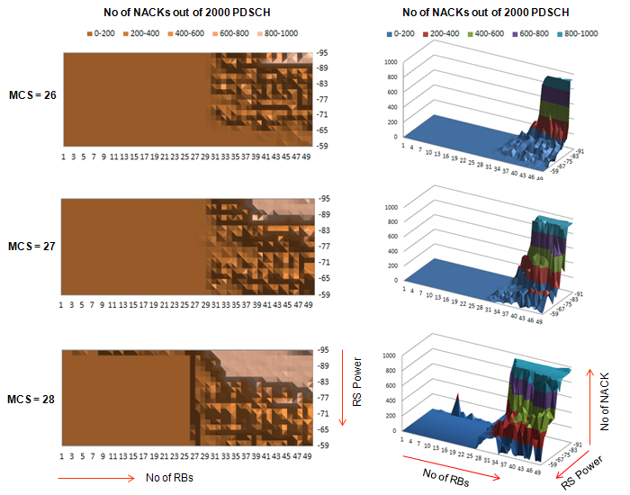
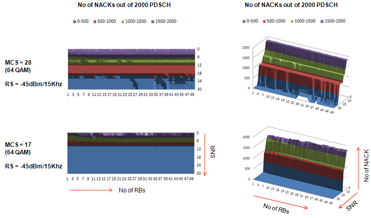
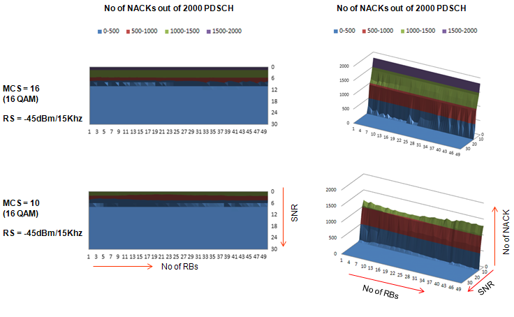
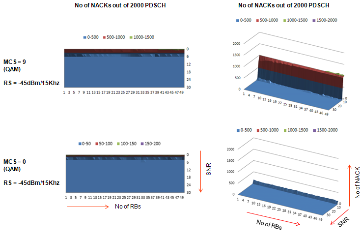

|
LTE Quick Reference Go Back To Index Home : www.sharetechnote.com |
|||||||||||||||||
|
Performance Test
I was asked pretty often "Can you help me with Performance Test of our UE ?", "How can I do the performance test for our device ?".
Then I asked them back "As far as I know there is no clear definition of 'Performance'. It seems that everybody has different opinion. What is your definition of Perforamce ?". "Is there any expected result for the test ?". Unfortunately I don't get any clear answer to these questions from any body.
The simplest definition of performance test would be "to test if UE achieves maximum throughput at each and every layer". Generally we do this kind of test in two different level, one at L1/PHY layer and one at IP layer.
In this section, I would focus more on L1/PHY layer performance test rather than IP layer throughput. For IP layer throughput performance, refer to Throughput page.
Fortunately, we have a well defined test methodology and criteria for PHY/L1 performace as a part of 3GPP conformance test. (Refer to Performance Test section of RF Measurement Page) But the test that are covered by the conformance test is bare minimum level (I would say it is less than the minimum). Let me give you a list of major factors that may influence the performance and possible number of settable values for each factors.
If you simply multiply the numbers on the right column, you would get more than 10 million combinations. In reality, you would have to take into account antenna performance, heat generation and a lot of other factors. So it is practically impossible to test all of these combinations. Then what are we supposed to do ? Just rely on RF Conformance test and give up all other possibilities ? You shouldn't do that. As you may have experienced in this area, however well you passed all the conformace test the problems will always happen in the field and most of those problems are related to those factors which has not been tested by conformance.
My personal best practice would be i) At first step, try all the parameters (factors) with a big step size (e.g, SNR sweep with 2 dB steps, rather than trying SNR sweep with 0.1 dB steps) ii) Identify the parameters that influence the performance the most. iii) Find the value ranges that shows the biggest differences in terms of performance. If you can reduce the number of possible test configuration to a couple of thousand cases rather than over 10 millions, I think it would be feasible to do this kind of testing as part of standard test at least a couple of times whenever you develop a new model and this would help you with performance optimization process and reduce any possible problems in the field.
RS Power vs PDSCH Decoding Error
In conventional technology (e.g, CDMA, GSM, WCDMA, HSDPA), total number of possible radio bearer for physical layer are not much. But in LTE, the number of possible physical layer bearer are so huge because there are so many possibilities of 'Number of RB' and 'MCS'. If you multiply the number of these two parameters, you would have at least a couple of hundreds possible physical bearer for any bandwith (as the System Bandwidth gets wider, the possible number of possible physical layer bearer gets larger).
For the accurate physical layer performance test, you have to test all these possible combinations, but none of the conformance level test cases requires this kind of full space testing. With a LTE network simulator and the test script, I performed a test to evaluate the physical layer performance of a UE.
The overall procedure are i) Put UE in connection mode with SISO ii) Set a specific MCS iii) Set a specific DL Power (I used Cell Specific Reference Power and PDSCH channel power for this step) iv) Transmit 2000 PDSCH from SS (Network Simulator) vi) Count the number of NACKs received by SS vii) Go to step iii) and decrement the DL channel power by 2 dB
Follwings are the result that I got from this test. You will notice the overal trends very easily as follows. i) Number of NACK gets increases as the number of RBs get increases ii) Number of NACK gets increases as the DL channel power get descreses iii) Number of NACK gets increases as DL MCS value get increases You may say.. these are nothing new to me. Every body can guess this kind of trends even without this kind of time cosuming test. You may be right. But think about following questions and see if you can give answers without doing the real test ? i) What is the RS Power where CRC error start happening ? (Is this point same as all UEs ?) ii) Once CRC error happens, does it increase in linear fashion or in non-linear fashion as RS power gets descreases ? iii) Once CRC error happens, does it increase in linear fashion or in non-linear fashion as MCS gets increases ? Like this, you can make a lot of questions you cannot answer without doing real test.
This result would not mean much for a specific single device since there is no officially defined evaluation criteria, but if you do the same test for the various UE models, you can use this result as a comparitive performance criteria and it would be very helpful to improve your device performance.

If your device shows this kind of behavior, you would notice that CRC error (NACK) would not happen easily when number of RB allocation is less than 25 regardless of MCS value and regardless of RS power. (Of course, you may have different result if you push down RS power even lower than -95 dBm/15 Khz). So for this device or the device with similar platform, you may skip the test configuration of number of RB less than 25 and basically this single filtering would reduce the number of test by 50 %.
This test (based on my personal criteria) is designed to find answer to a question "What is the minimum condition / configuration to start generating CRC error ?"
Everybody would know the general tendency even without doing any experiment as follows : i) The rate of CRC error would increase as SNR decrease ii) The rate of CRC error would increase as MCS increase iii) The rate of CRC error would increase as Code Rate increase But this kind of general tendency based on theory would not give you the answer to your specific questions to your specific device as follows. i) Exactly at which N_RB (number of RBs) and at which SNR CRC error start occur ? ii) Is this starting point the same for all of your device ? iii) What if your device RF calibration goes wrong ? Would it heavily influence the test result ? iv) (For example) The transport block size at I_tbs = 20 & N_RB = 3 and the one at I_TBS = 0, N_RB = 50 are the same. Would this two condition generate the same rate of CRCs with SNR changes ? Probably the best way to find answers to these questions would be to do the real test. This section would give you some insight on this (even though it would not give you all the answers).
Overall procedure of my test are i) Set the power of Downlink Reference Signal (Cell Specific Reference Signal) to be -45 dBm (This is very high.. you would hardly experience this kind of strong power in live network, but I set it to be high like this to provide UE with ideally high power so that the RS power would not be any cause of CRC error). ii) Configure downlink channel configuration so that SNR would be around 30 dB. iii) Set DL N_RB (Number of Resource Blocks for PDSCH) to be 1 iv) transmit PDSCH for 2000 subframe and count the number of NACK (indicator of number of CRC) v) Increment DL N_RB by 1 vi) Repeat step iv)~v) until N_RB reaches 50 vii) Decrement SNR by 2 dB viii) Repeat step step iii)~vii) ix) Repeat step i)~viii) for all possible MCS (0~28)
Yes... it was huge amount of test and it took me several days to complete this test. Several test result are as follows. This is just for your reference as an introduction to test methodology. and it is only for a single device that I used. You may have a little different result for your device.
First look at the case of Max MCS and Min MCS for 64 QAM. Number of NACK (CRC error) pattern is not straight linear, but you would see some trend changes within this range.

Now let's look at the case of Max MCS and Min MCS for 16 QAM. Number of NACK (CRC error) pattern is not straight linear, but you would see some trend changes within this range. For the device I tested, it turned out that SNR should be at least 10 dB or higher in order to achieve the full performance without any CRC for every possible resource block allocation.

Now let's look at the case of Max MCS and Min MCS for QAM. Again, the Number of NACK (CRC error) pattern is not straight linear, but you would see some trend changes within this range.

|